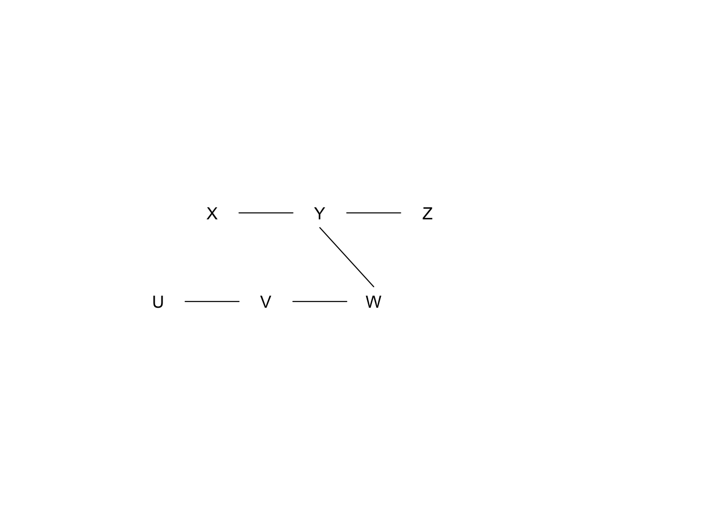

Homework 5
General instructions
- Due Friday, March 31 at midnight CST.
- Please complete the exercises marked (REQD). (Project Work, Metacognitive Reflection, Sensitivity Analysis, and Causal Discovery)
- The other exercises provide opportunities to explore ideas more deeply and re-engage with past ideas. Complete whatever aligns with your goals.
Revisions
If you would like to make revisions to any parts of prior assignments, please do the following:
- Keep all old writing and feedback intact
- Un-highlight yellow text that has already been addressed with feedback and revisions
- Write an updated response just below your previous response and highlight the new writing in yellow
Project Work (REQD)
Take a look at our Final Project page and make as much progress as you can towards Milestone 2. Create a separate Google Doc for your project work, and share this document with the instructor. (Just create one Google Doc per team if you’re working with teammates.)
This project-specific Google Doc is where intermediate work and feedback will be recorded even if the ultimate deliverable ends up being something other than a written report (e.g., presentation, website).
Metacognitive Reflection (REQD)
For this reflection, check in on your understanding of our new topics in light of the breakdown below (which you can disagree with!). (Do this reflection after the main exercises.)
- Enduring concepts:
- Why do we do sensitivity analyses for unmeasured variables and how, in general, do we interpret results?
- What is the goal of causal discovery?
- Important concepts:
- Making connections between the probability underlying casual graphs and why we need to specify parameters in sensitivity analyses
- Details of how the causal discovery algorithm covered in the concept video
- Concepts worth being familiar with:
- What do you think should go under this category?
Sensitivity analysis for unmeasured confounding (REQD)
Context
Does smoking actually cause lung cancer? There was great debate in the 1950s and 1960s on this issue. A prominent statistician R. A. Fisher (a longtime smoker) was dubious of the actual causal relationship and proposed that some genetic variant might be more common in smokers and also increase lung cancer risk.
In the paper Smoking and lung cancer: recent evidence and a discussion of some questions, Jerome Cornfield and co-authors report on a sensitivity analysis for unmeasured confounding to address Fisher’s proposition (second column on page 1186). We’ll corroborate these results in this exercise.
Implementation with tipr
Use the adjust_rr_with_binary() function in the tipr package to implement a sensitivity analysis. rr stands for relative risk and is a probability ratio (as opposed to an odds ratio). Relative risks are alternate effect measures for binary outcomes.
- First look at the documentation for this function.
- Note that because our causal effect is a relative risk, the
confounder_outcome_effectis also quantified with a relative risk.
- Note that because our causal effect is a relative risk, the
- Use the
seq()function to generate a sequence of regularly spaced values for theexposed_confounder_prev,unexposed_confounder_prev, andconfounder_outcome_effectarguments.- Look at the documentation for the
seq()function to understand how the arguments work. - The only background information that we’re starting with is
- Look at the documentation for the
- A recent study suggests that the causal effect (before considering any unmeasured confounders) is a relative risk of about 7.
library(tidyverse)
library(tipr)
# This creates all combinations of values across the 3 parameters
parameter_combos <- tidyr::crossing(
exposed_confounder_prev = seq(from = ___, to = ___, by = ___),
unexposed_confounder_prev = seq(from = ___, to = ___, by = ___),
confounder_outcome_effect = seq(from = ___, to = ___, by = ___)
)
# Use dplyr::filter() to remove combinations that won't "explain away" (make null) the observed causal effect
# i.e., make sure that the parameters indicate the correct sign of the U->A relationship
parameter_combos <- parameter_combos %>%
filter()
# Run sensitivity analysis
sens_results <- adjust_rr_with_binary(
effect_observed = ___,
exposed_confounder_prev = parameter_combos$exposed_confounder_prev,
unexposed_confounder_prev = parameter_combos$unexposed_confounder_prev,
confounder_outcome_effect = parameter_combos$confounder_outcome_effect,
verbose = FALSE
)Visualize
Visualize the sensitivity analysis results in a way that you find effective.
- The instructor found it helpful to collapse the
exposed_confounder_prevandunexposed_confounder_prevparameters into a single parameter: - You may find it helpful to show all 3 parameters directly in your visualization.
Interpret
- Explain the general trends you see in your visualization.
- Use both your visualization and the
sens_resultsdata frame to identify what parameter combinations nullify the observed causal effect (at least approximately). - Based on these results, comment on the robustness of the original causal effect estimate. Describe what background research you might need to conduct to contextualize how realistic the nullifying parameters are.
Causal discovery (REQD)
Exercise 1
Consider data that truly come from a fork X <- Y -> Z. What pattern would a causal discovery algorithm report?
If you could supply prior knowledge to the algorithm on only one edge that is required to be present, what edge (if any) would allow the entire structure to be learned? Explain briefly.
Exercise 2
We have learned the following structure from the skeleton building phase.

We have the following results from conditional independence tests (\(H_0\) indicates conditional independence, significance level = 0.01):
- \(X \perp\!\!\!\perp Z \mid Y\)? p-value = 0.001
- \(X \perp\!\!\!\perp W \mid Y\)? p-value = 0.1
- \(Y \perp\!\!\!\perp V \mid W\)? p-value = 0.1
- \(U \perp\!\!\!\perp W \mid V\)? p-value = 0.1
What pattern would a causal discovery algorithm report? Show your work.
Exercise 3
We have measured 3 variables \(X\), \(Y\), and \(Z\) (all quantitative). You can read in the data below.
disc_data <- readr::read_csv("https://www.dropbox.com/s/moj3k3fed7puicr/discovery_data.csv?dl=1")- Step through the causal discovery process, using regression models as your conditional independence test. Use a type 1 error rate (significance level) of \(\alpha=0.01\). Show all work. This involves:
- Showing model output.
- Writing a sentence using numbers from the output at each step to show the decisions made by the algorithm.
- Report the final output that the discovery algorithm would give.
Simulation study for sensitivity analyses
Conduct a simulation where the true average causal effect is zero but where there is an unmeasured confounder with U->A and U->Y effect magnitudes that you set. Use the tipr package to investigate if sensitivity analysis results align with your simulation setup. (You’ll have to look through the package documentation to find the right sensitivity analysis function.)
Learning about mediation analysis
Mediation analysis was a topic that we were going to talk about on Monday, March 20. We may come back to it after we finish the other topics on our schedule, but if you’d like to learn a little more about this topic, check out the following resources:
- YouTube video (with slides)
- Overview paper: Nguyen, T. Q., Schmid, I., & Stuart, E. A. (2020). Clarifying causal mediation analysis for the applied researcher: Defining effects based on what we want to learn. Psychological Methods. https://doi.org/10.1037/met0000299
Randomized experiments
This exercise can help work through the idea that randomized experiments are the “gold standard” for causal inference.
- Simulate data from a fork structure where
Uis a common cause ofAandY. - In the part of your code when you simulate
Y, also simulate the potential outcomes under treatment and control (Ya1andYa0) by setting theApart equal to 1 forYa1and 0 forYa0. - Create a new version of treatment called
A_randwhich is a randomly assigned treatment (in contrast to naturally-occurring treatmentAwhich is affected byZ) using thesample()function:
# This randomly assigns half of the units to treatment and half to control
A_rand <- sample(rep(c(0,1), each = n/2)) # n is the simulation sample size- Check whether marginal exchangeability holds for the natural version of treatment
A. Repeat for the randomized version of treatmentA_rand.
Summarize what you learn from these investigations.